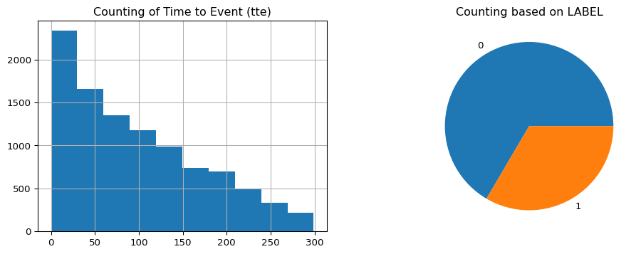
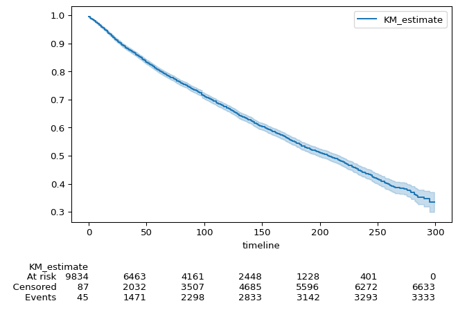
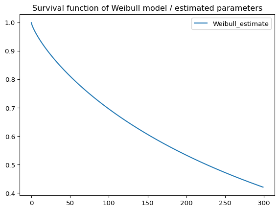
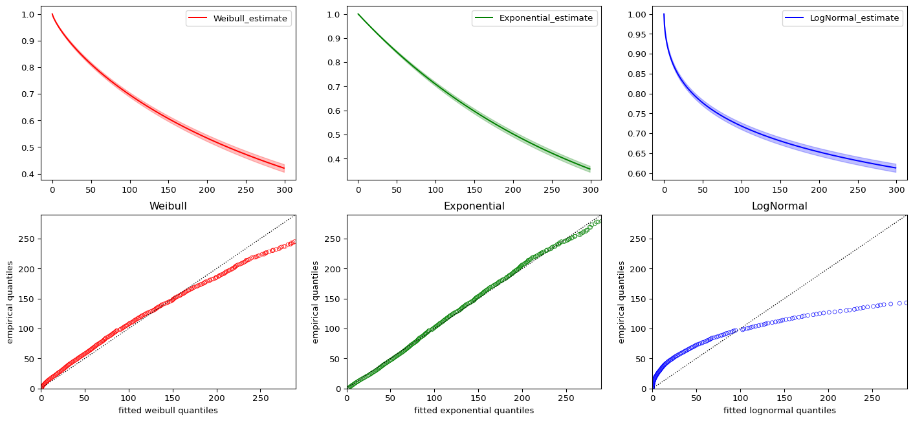
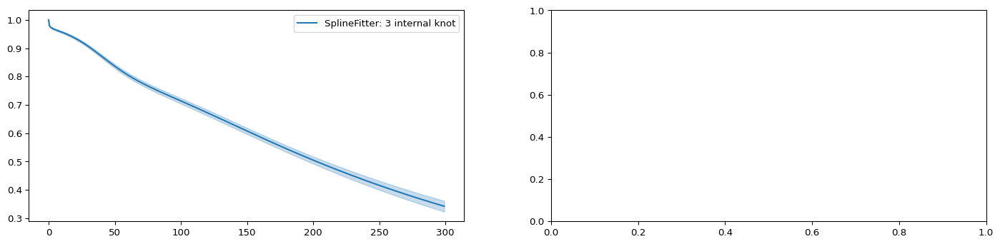

import numpy as np
import pandas as pd
import matplotlib.pyplot as plt
from lifelines.plotting import qq_plot, plot_interval_censored_lifetimes
import lifelines as lflSurvival Analysis
linux
code
BBB
SEER dataset
https://seer.cancer.gov/data-software/documentation/seerstat/nov2016/TextData.FileDescription.pdf
https://arxiv.org/abs/2204.07276
id: parient’s IDtte: time to eventlabel: cancer or notAGE_DX: patient’s ageEOD10_SZ: size of the tumorMALIGCOUNT: number of In Situ/malignant tumors for patientBENBORDCOUNT: number of benign/borderline tumors
Data preparation
df = pd.read_csv('SEER_sample_imputed.csv')
# keeping just a few columns
df = df[['id', 'tte', 'label', 'AGE_DX', 'EOD10_SZ', 'MALIGCOUNT', 'BENBORDCOUNT']]
df = df.dropna()
# there are some 'id's duplicated
df.drop_duplicates('id', inplace=True)
df.set_index('id', inplace=True)
df = df.astype({'tte': int, 'label': int})df.head()| tte | label | AGE_DX | EOD10_SZ | MALIGCOUNT | BENBORDCOUNT | |
|---|---|---|---|---|---|---|
| id | ||||||
| 40003996 | 40 | 0 | 0.336449 | 0.04536 | 0.090909 | 0.0 |
| 38375019 | 2 | 1 | 0.598131 | 0.03006 | 0.000000 | 0.0 |
| 36142366 | 119 | 1 | 0.710280 | 0.04008 | 0.000000 | 0.0 |
| 35021855 | 229 | 1 | 0.560748 | 0.02004 | 0.000000 | 0.0 |
| 38377976 | 122 | 0 | 0.448598 | 0.06012 | 0.000000 | 0.0 |
df.info()<class 'pandas.core.frame.DataFrame'>
Index: 9966 entries, 40003996 to 38818610
Data columns (total 6 columns):
# Column Non-Null Count Dtype
--- ------ -------------- -----
0 tte 9966 non-null int64
1 label 9966 non-null int64
2 AGE_DX 9966 non-null float64
3 EOD10_SZ 9966 non-null float64
4 MALIGCOUNT 9966 non-null float64
5 BENBORDCOUNT 9966 non-null float64
dtypes: float64(4), int64(2)
memory usage: 545.0 KBdf.groupby(['label']).count()| tte | AGE_DX | EOD10_SZ | MALIGCOUNT | BENBORDCOUNT | |
|---|---|---|---|---|---|
| label | |||||
| 0 | 6633 | 6633 | 6633 | 6633 | 6633 |
| 1 | 3333 | 3333 | 3333 | 3333 | 3333 |
Censorhip
Happens when the time to event is partially known.
- Not censored: the event occured and the time is known.
- Right-censored: the survival duration is > the the observed.
- Left-censored: the survival duration is < then the observed duration.
- Interval-censored: the survival duration is within the range but not exactly known.
The data is right-censored because there are over 6,000 observations where the event didn’t happen. It the cabe confirmed in the plot below.
plt.figure(figsize=(12,4))
plt.subplot(1,2,1)
plt.title('Counting of Time to Event (tte)')
df['tte'].hist()
plt.subplot(1,2,2)
plt.title('Counting based on LABEL')
df.groupby(['label']).count()['tte'].plot(kind='pie', label='');
Survival Function
- Shows the percentage of the population that did not experienced the event until that time \(t\).
- Shows the survival probability (probability of the event of interest happens) after time \(t\):
\[\Large S(t) = Pr(T > t)\]
- \(T\): when the event occurs.
- \(t\): any point in time during an observation.
Hazard Function
- Shows the probability of that event happens at some time give the survival up to that time.
\[\Large h(t) = -\frac{d}{dt} \log(S(t))\]
- Hazard rate: instantaneous rate of the event occuring
Survival Function/Curve Estimation
\[\Large S(t) = \prod_{i:t_i \leq t} \left(1 - \frac{d_i}{n_i} \right)\]
- \(t_i\): duration time
- \(d_i\): number of events that happened at time \(t_i\)
- \(n_i\): number of individuals known to have survived up to time \(t_i\)
Non-parametric
- Does not assume underlying distribution.
- Describes the data better.
- It is not smooth/differentiable
Kaplan-Meier Model
most used
kmf = lfl.KaplanMeierFitter()
kmf.fit(durations=df['tte'], event_observed=df['label'])<lifelines.KaplanMeierFitter:"KM_estimate", fitted with 9966 total observations, 6633 right-censored observations>kmf.plot_survival_function(at_risk_counts=True)
plt.ylabel('Survival Probability');
# this measure might be wrong because more than 50% of the data is censored
print('Median survival time:', kmf.median_survival_time_)Median survival time: 208.0Parametric
- Usually gives more information because there is an underlying distribution
- Is necessary to assess the goodness-of-fit to avoid biases and misinterpretations
Weibull Model
\[\Large f(x; \lambda,k) = \frac{k}{\lambda} \left( \frac{x}{\lambda} \right)^{k-1} e^{-(x/\lambda)^k} \qquad \longrightarrow \quad S(t) = e^{-(t/\lambda)^\rho}\]
\[x \geq 0, k > 0, \lambda > 0\]
- \(k\) or \(\rho\): shape of the distribution
- \(k < 1\): event rate decreases over time
- \(k = 1\): event rate is constant
- \(k > 1\): event rate increases over time
- \(\lambda\): scale of the distribution (indicates when 63.2% of the population has experienced the event)
wb = lfl.WeibullFitter()
# Weibull needs non-zero tte
df['tte'] = df['tte'] + 1e-10
wb.fit(durations=df['tte'], event_observed=df['label'])<lifelines.WeibullFitter:"Weibull_estimate", fitted with 9966 total observations, 6633 right-censored observations>print('Lambda:', wb.lambda_)
print('Rho:', wb.rho_)
ax = wb.survival_function_.plot()
ax.set_title("Survival function of Weibull model / estimated parameters")Lambda: 358.7938759636887
Rho: 0.7952285765619703Text(0.5, 1.0, 'Survival function of Weibull model / estimated parameters')
\(\rho\) is smaller than 1: the event rate (cancer incidence) decreases over time.
Comparing Several Models
wb = lfl.WeibullFitter().fit(durations=df['tte'], event_observed=df['label'])
exp = lfl.ExponentialFitter().fit(durations=df['tte'], event_observed=df['label'])
log = lfl.LogNormalFitter().fit(durations=df['tte'], event_observed=df['label'])Akaike Information Criterion (AIC)
- Estimates the prediction error and relative quality of statistical models
- The less information the model loses, the higher its quality. From
lifelinesdocumentation: The model with the lowest AIC is desirable, since it’s a trade off between maximizing the log-likelihood with as few parameters as possible.
print('Weilbull model:', wb.AIC_)
print('Exponential model:', exp.AIC_)
print('LogNormal model:', log.AIC_)Weilbull model: 44222.28063808024
Exponential model: 44474.95418984919
LogNormal model: 47666.55189603808models = {'Weibull':['r', wb],
'Exponential':['g', exp],
'LogNormal':['b', log]}
fig, axes = plt.subplots(2, 3, figsize=(18, 8))
i = 0
for model_name,model_lst in models.items():
m_color = model_lst[0]
model = model_lst[1]
model.plot_survival_function(ax=axes[0,i], c=m_color)
ax = qq_plot(model, ax=axes[1,i], scatter_color=m_color)
ax.title.set_text(model_name)
i += 1
Finding the best model based on AIC
best_model, best_aic_ = lfl.utils.find_best_parametric_model(event_times=df['tte'],
event_observed=df['label'],
scoring_method="AIC")
print('Best model:', best_model)
print('Best model AIC:', best_aic_)Best model: <lifelines.SplineFitter:"SplineFitter: 3 internal knot", fitted with 9966 total observations, 6633 right-censored observations>
Best model AIC: 43413.18093519307fig, axes = plt.subplots(1, 2, figsize=(18, 4))
best_model.plot_survival_function(ax=axes[0])
# line below raises the error: NotImplementedError: Distribution not implemented in SciPy
#qq_plot(best_model, ax=axes[1])
Weibul Model and Covariates
aft = lfl.WeibullAFTFitter()
aft.fit(df=df, duration_col='tte', event_col='label')<lifelines.WeibullAFTFitter: fitted with 9966 total observations, 6633 right-censored observations>aft.print_summary()AttributeError: The '.style' accessor requires jinja2| model | lifelines.WeibullAFTFitter |
| duration col | 'tte' |
| event col | 'label' |
| number of observations | 9966 |
| number of events observed | 3333 |
| log-likelihood | -21462.69 |
| time fit was run | 2025-10-07 22:44:50 UTC |
| coef | exp(coef) | se(coef) | coef lower 95% | coef upper 95% | exp(coef) lower 95% | exp(coef) upper 95% | cmp to | z | p | -log2(p) | ||
|---|---|---|---|---|---|---|---|---|---|---|---|---|
| lambda_ | AGE_DX | -5.74 | 0.00 | 0.18 | -6.10 | -5.39 | 0.00 | 0.00 | 0.00 | -31.93 | <0.005 | 740.77 |
| BENBORDCOUNT | 1.43 | 4.18 | 1.14 | -0.81 | 3.67 | 0.45 | 39.21 | 0.00 | 1.25 | 0.21 | 2.25 | |
| EOD10_SZ | -1.20 | 0.30 | 0.11 | -1.42 | -0.99 | 0.24 | 0.37 | 0.00 | -11.04 | <0.005 | 91.66 | |
| MALIGCOUNT | -0.96 | 0.38 | 0.30 | -1.54 | -0.37 | 0.21 | 0.69 | 0.00 | -3.22 | <0.005 | 9.60 | |
| Intercept | 8.75 | 6320.25 | 0.10 | 8.55 | 8.95 | 5157.63 | 7744.94 | 0.00 | 84.38 | <0.005 | inf | |
| rho_ | Intercept | -0.16 | 0.85 | 0.01 | -0.19 | -0.13 | 0.83 | 0.88 | 0.00 | -10.83 | <0.005 | 88.44 |
| Concordance | 0.66 |
| AIC | 42937.37 |
| log-likelihood ratio test | 1292.91 on 4 df |
| -log2(p) of ll-ratio test | 923.30 |